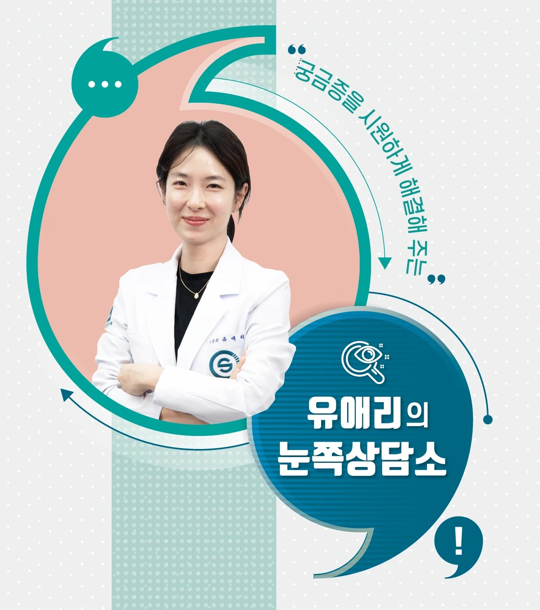

센트럴서울안과에서 운영 중인 유튜브 채널 <닥터스TV>의 영상을 시청하다 보면 병원에서 의사와 환자로 대면할 때와는 또 다른 친근함으로 시청자를 사로잡는 이가 있다. 바로 유애리 원장이다. ‘유애리의 눈쪽상담소’를 운영하며 때론 옆집 누나처럼, 상냥한 언니처럼, 또는 친구처럼 눈에 대한 다양한 궁금증을 해결해 주고 있다. ‘신생아 첫 안과 검진’, ‘10대 서클렌즈 착용’ 등을 비롯해 대중매체를 통해 소개되는 ‘눈’과 관련한 흥미로운 이야기를 속 시원하게 들려준다.
유애리 원장은 유튜브 영상뿐만 아니라 신문 지면에도 눈 건강 칼럼을 연재 중이다. 중앙일보 ‘건강한 가족’ 지면에서 가족의 눈 건강에 대해 Q&A 형식으로 담아내고 있다. 유애리 원장의 칼럼을 함께 살펴보자.
‘건강한 가족’ Q&A 1. 고도근시라면, ICL렌즈삽입술
저는 심한 근시로 시력교정수술을 고민 중인데, 수술 후 근시 퇴행이나 부작용이 걱정됩니다. 제 상황에 맞는 시력교정수술이 있을까요?
렌즈삽입술은 각막과 수정체 사이에 렌즈를 넣어 시력을 교정하는 수술이다. 일반적인 레이저 교정술과 다르게 각막을 깎지 않고 렌즈를 삽입하는 방법이다. 렌즈를 넣는 위치에 따라 전방렌즈삽입술, 후방렌즈삽입술로 분류할 수 있는데, 최근에는 후방 ICL렌즈삽입술이 많이 시행되고 있다.
이 수술을 고려할 때 꼭 알아야 할 중요한 사항이 있다. 환자 개인의 렌즈 사이즈 선택과 적절한 삽입 위치 결정 등을 포함해 의료진의 정밀한 수술 설계가 필요하다는 것이다. 또 수술이 별도의 장비 없이 의사의 손으로 이뤄지기 때문에 의료진의 높은 숙련도가 요구된다. 안구 내부를 초고속 스캔한 후 360도 촬영으로 관찰하는 ‘카시아 2’와 같은 계측 장비는 렌즈삽입술 전 필수 검사라고 할 수 있다.
시력교정술은 시력을 개선하는 것도 중요하지만 무엇보다 안전이 최우선돼야 한다. 의료진은 하루에 한 눈씩 수술을 하거나 시력이 바뀔 수 있는 학생들의 경우 최소 6개월간의 시력 변화를 확인하고 수술하는 등 안전을 위한 절차를 지켜야 한다. 렌즈삽입술을 받는 경우 수술 후 정기 검진을 통해 렌즈의 상태를 점검하는 것도 매우 중요하다.
‘건강한 가족’ Q&A 2. 연령 제한 없는, 시력 교정 드림렌즈
아이들의 진행성 근시가 심해지는 성장기에 드림렌즈를 착용하는 것이 효과가 있을까요?
드림렌즈는 수면 중에 각막의 형태를 변화시켜 시력을 교정해 주는 렌즈를 말한다. 잠을 자는 동안 특수한 렌즈를 착용하면 각막의 형태를 조절하면서 시력을 교정해, 렌즈를 제거한 낮 동안에도 선명한 시력을 유지할 수 있다. 착용을 중단할 경우 원래 상태로 돌아갈 수 있으며, 소아부터 성인까지 착용이 가능하다. 성장기 아이들의 근시 진행 속도를 억제하는 방법으로도 주목받고 있다.
중요한 것이 있다. 최소 6시간 이상의 수면 시간이 필요하며, 가능하면 8시간 이상의 수면을 권한다. 드림렌즈 또한 일반 렌즈와 마찬가지로 깨끗한 관리가 필요하다. 그렇지 않으면 통증, 이물감, 충혈과 같은 불편한 증상이 발생할 수 있고, 각막염·결막염과 같은 눈 질환의 발생 가능성도 있으므로 신중하게 관리하면서 사용해야 한다.
드림렌즈의 권장 사용 기한은 2년이다. 드림렌즈의 효과를 누리기 위해서는 올바른 착용법과 주의 사항을 숙지한 후 안과 전문의의 검진을 받아야 한다.